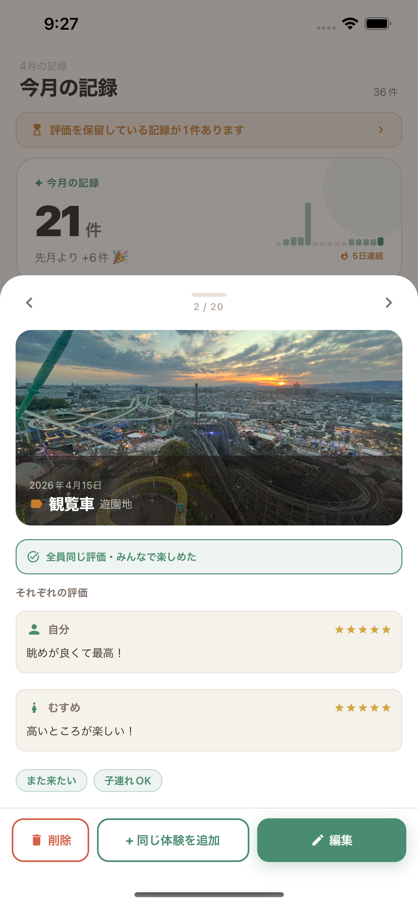

マイレビュー
アカウント登録不要。 行った場所、食べたもの、買ったもの—— 気づいたときにすぐ記録できる、あなただけの体験ノート。
まずは試してみる arrow_forward
SNSやレビューサービスは「他の人に見られる前提」。だからこそ、本音が書けない場面があります。
「まあまあだった」「二度と行かない」——素直な感想も、マイレビューなら気を使わずそのまま残せます。データは端末の外に出ません。
メールアドレスもパスワードも必要ありません。アプリを開いたその日から、記録を始められます。あなたのデータは端末の中だけに保存されます。
パートナー・子供・ペットの評価もまとめて記録できます。「家族全員が高評価だったお店」を絞り込む機能で、次のお出かけ先もすぐ見つかります。
マイレビューは、プライバシーを最初から設計に組み込んでいます。記録はあなたのスマートフォンの中だけに存在します。
アカウント登録不要。App Store・Google Play からダウンロードできます。